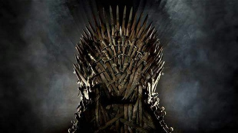

{kind=link}
O Trono De Ferro
{kind=link}
O Trono de Ferro é o assento dos Reis dos Sete Reinos, e também é habitualmente utilizado como um recurso de metonímia para se referir à autoridade do rei. Sentado nele, o Rei realiza audiências e aplica justiça, e outros indivíduos atuando em seu nome, como sua Mão ou o Regente, podem sentar no Trono em sua audência. A cadeira em si é dura e fria, com muitas bordas afiadas.
Construção
O Trono de Ferro foi construído por Aegon I Targaryen, o primeiro Rei dos Sete Reinos. Aegon, o Conquistador ordenou a construção de um Trono com as espadas fundidas dos inimigos que venceu; supostamente, mil lâminas foram utilizadas, aquecidas pelo fogo soprado pelo dragão Balerion; a forja levou cinquenta e nove dias. O Trono de Ferro é uma monstruosidade de espetos, bordas afiadas e metal torcido. É desconfortável, e o encosto é de aço com pontas afiadas, tornando recostar-se impossível. Aegon I assim ordenou que fosse feito, dizendo que um Rei nunca deveria sentar-se facilmente. Aerys II, o Rei Louco, sempre cortava-se quando nele sentado, e diz-se que o Trono já causou a morte de várias pessoas. O termo Trono de Ferro é usado como metonímia para o governo do monarca dos Sete Reinos de Westeros em Porto Real.
Sala do Trono
O disputado trono, representado na série de televisão Game of Thrones Desde a construção da Fortaleza Vermelha, o Trono de Ferro fica localizado numa alta plataforma na Sala do Trono. Habitualmente, os membros da Guarda Real ficam de guarda abaixo, e quando o Rei está presidindo uma sessão, apenas ele, sua família e seu conselho podem sentar-se - todos os outros devem ficar em pé ou ajoelhar-se. Durante o reinado dos Targaryen, a Sala do Trono era decorada com crânios de seus dragões. Quando Robert Baratheon os depôs, os crânios foram substituídos por tapeçarias de caça. Após sua morte, elas foram retiradas.
A Sala do Trono foi o palco destes importantes eventos:
- Assassinato dos Reis Maegor e Aerys II Targaryen;
- Execução do Lorde Rickard Stark e de seu filho Brandon, além de vários outros nobres que os acompanhavam;
- Envenenamento do Rei Joffrey Baratheon em seu banquete de casamento.
Lista de Reis no Trono de Ferro
- 1 d.C. a 37 d.C.: Aegon I Targaryen, o Conquistador
- 37 d.C. a 42 d.C.: Aenys I Targaryen
- 42 d.C. a 48 d.C.: Maegor I Targaryen, o Cruel
- 48 d.C. a 103 d.C.: Jaehaerys I Targaryen, o Conciliador
- 103 d.C. a 129 d.C.: Viserys I Targaryen
- 129 d.C. a 131 d.C.: Aegon II Targaryen
- 131 d.C. a 157 d.C.: Aegon III Targaryen, o Veneno de Dragão
- 157 d.C. a 161 d.C.: Daeron I Targaryen, o Jovem Dragão
- 161 d.C. a 171 d.C.: Baelor I Targaryen, o Abençoado
- 171 d.C. a 172 d.C.: Viserys II Targaryen
- 172 d.C. a 184 d.C.: Aegon IV Targaryen, o Indigno
- 184 d.C. a 209 d.C.: Daeron II Targaryen, o Bom
- 209 d.C. a 221 d.C.: Aerys I Targaryen
- 221 d.C. a 233 d.C.: Maekar I Targaryen
- 233 d.C. a 259 d.C.: Aegon V Targaryen, o Improvável
- 259 d.C. a 262 d.C.: Jaehaerys II Targaryen
- 262 d.C. a 283 d.C.: Aerys II Targaryen, o Rei Louco
- >283 d.C. a 298 d.C.: Robert I Baratheon, o Usurpador
- 298 d.C. a 300 d.C.: Joffrey I Baratheon, o Mal Nascido
- 300 d.C. - presente: Tommen I Baratheon